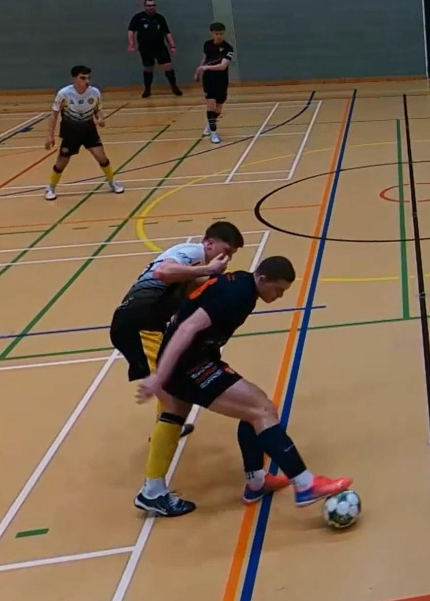

Joe plays pivot for Team Sunderland in the National Futsal Series Tier 2 North. His current coach, Tony Loftus, describes him as an athletic, physically strong, technically excellent pivot who can protect the ball, beat players 1v1 and finish.
Tap any part of the Pride DNA house below — the four pillars, plus the pivot's role-specific attributes — to see Joe's evidence for it on the right.

The pivot has to own the physical exchange — absorb contact, stay up, set the ball. On a 40m court, there's nowhere to hide from it.


"Strong physical presence and ball protection."
Tony Loftus · Team Sunderland Head Coach
"Physically he is, for want of a better term, 'a machine' — with strength, pace, power and stamina to boot."
Danny Fowler · UEFA A, Middlesbrough Academy
View reference"He has developed into an extremely quick, strong and physical athlete… he can dominate physically due to his height, pace and strength."
Mark Hodgson · Brazilian Soccer Schools
View referenceVerified elite jump and lateral-power numbers underneath a 6'2", 89.9kg frame.
The pivot's core job on the ball. Receive, turn, shoot — a permanent threat every time possession arrives in the attacking third.

"Positive 1v1 dribbling and finishing ability."
Tony Loftus · Team Sunderland Head Coach
"Able to turn away from defenders, protecting the ball with great ease, as well as drive forwards into space with the ability to beat defenders in 1v1 situations."
Mark Hodgson · Brazilian Soccer Schools
View reference"He is a threat with the ball, can pick a hard pass, play through the lines, and judges his attacking runs well."
David Banjura · Former National League Chief Scout
Eight goals from seven appearances in his first NFS season. Verified on The FA's NFS platform.
The pivot is the team's focal point. Retaining under pressure isn't just holding — it's absorbing contact, staying up, and setting the ball back cleanly so the team plays through you rather than around you.

"Athletic, physically strong, technically excellent pivot who can protect the ball, beat players 1v1 and finish."
Tony Loftus · Team Sunderland Head Coach
"He is very rarely flustered when under pressure and is able to turn away from defenders, protecting the ball, with great ease."
Mark Hodgson · Brazilian Soccer Schools
View reference"Confident to receive under pressure. Showed a high level of responsibility."
Richard Eyley · Scout, Sheffield United FC
Retention under pressure is the explicit focus of Joe's current IPDP — coach priorities include "make hold-up play more consistent under pressure" and "recognise earlier whether to hold, set, turn or finish".
The pivot is the team's furthest-forward defender. Press intensity plus positional understanding — knowing which passing line to close and when.

"High work rate and energy."
Tony Loftus · Team Sunderland Head Coach
"In defence, he defends at a high intensity, not allowing his man any time on the ball, and is rarely caught out of position in turnovers."
Tom Thorogood · Red House School
View reference"He works hard week in, week out, always giving 100%. I never have to encourage him to work hard — he does it naturally."
Lee Moore · PROformance Athlete Development
View referenceElite 5m burst and 34 km/h top speed give the acceleration to complete the press. Coach-verified work rate gives the appetite.
A Pride player reads the picture and acts on it. For the pivot, that's the decision loop of hold / set / turn / drive / finish — reading the defender, the wing runner and the space around all in one moment.

"He reads the game well, which allows him to be successful in winning 50/50s and interceptions, and repositions well to help progress the attack."
Tom Thorogood · Red House School
View reference"He plays with his head up and scans the pitch both with and without the ball, which allows him to take up excellent positions and make good decisions with the ball."
Mark Hodgson · Brazilian Soccer Schools
View reference"He analyses his performance and provides feedback on a detailed and capable level of tactical understanding for his age."
Danny Fowler · UEFA A, Middlesbrough Academy
View referenceReads the game with his head up — scanning with and without the ball, spotting supporting runs, and picking the right option to hold, set, turn or finish.
The Pride standard is consistent, not occasional. First touch, weight of pass, quality of set — all held under pressure from the defending pivot with the ball moving quickly around them.

"Technically excellent with the ball."
Tony Loftus · Team Sunderland Head Coach
"Joe has a lovely feel for the ball — he can manipulate it easily and freely between both feet and perform technical actions to a high, game-realistic level."
Danny Fowler · UEFA A, Middlesbrough Academy
View reference"Superb with both right and left foot in terms of close ball control, first touch and short passing."
Mark Hodgson · Brazilian Soccer Schools
View referenceThe coach's own verbatim word choice — "technically excellent" — is written into Joe's IPDP as a top-line strength alongside physical presence and 1v1 finishing.
Emotional Intelligence is the fourth pillar of the Pride DNA — and the one that never shows up on film. So it is evidenced two ways: by what Joe actually does — how he responds to setbacks, takes coaching and drives his own development — and by what the people who have coached and scouted him say, unprompted, from every stage of his career.
Growth-related knee problems as a teenager put him out for nine months — he completed the rehab and came back. He fought through relegation seasons and heavy defeats at 16 with Grangetown without his head dropping. And when he twisted his ankle in the opening drill of the England U23 camp in Derby, he stayed for the afternoon classroom session, then immediately built a plan with his physio and S&C coach to train around the injury and hold his fitness — using the moment to step back from football and commit fully to futsal and England.
Feedback becomes action. Told to sharpen his scanning, he added VR scanning work and one-to-one cognitive coaching. Told to build core strength, he is on a structured programme running through to December. Every development-plan priority is matched by a concrete step he takes himself.
He records and watches every match on Veo, and does one-to-one video analysis — scanning, turning and decision-making — the habit of a player who holds himself to account rather than waiting to be told.
Brazilian Soccer School from age four, strength & conditioning from age seven, and today a self-built weekly programme across cognitive/scanning work, technical coaching, VR, S&C, technical-fitness and futsal. The work rate every coach describes is a decade-deep habit.
Captain of numerous teams, and the player who set the training standards at Gateshead's academy. Off the court he coaches at Thornaby Women's FC, works as a Level 1 PT and assistant S&C coach, referees, and has started his UEFA C coaching badge — real responsibility, carried at 18.
"A positive role model for his peers in terms of his effort, commitment and attitude. Captain of numerous school teams, and voted Head Boy — an excellent ambassador for the school."
"I have never met anyone as determined as Joe in terms of mindset and wanting to achieve at something. From the first session I could see how determined and committed he was. He is like a sponge. He listens, commits and I only need to show him something once and he's away with it."
"Psychologically Joe has an inner drive and confidence where he knows he's on a journey to achieve whatever the best outcome may be for him. He has confidence in his ability but never crosses that line into arrogance with it. He is very self-aware and conscientious."
"Despite carrying an injury and despite the early heavy scoreline against his team, Joe showed no visible signs of getting over-frustrated or blaming teammates after a mistake. Multiple instances of Joe offering advice to teammates. Showed other good leadership qualities such as encouraging and praising teammates throughout the game."
Jack Manship
Scout, Doncaster Rovers / Minnesota United
"I sense a positive and encouraging character. Body language suggests a calm positivity. Confident to receive under pressure. Showed a high level of responsibility."
Richard Eyley
Scout, Sheffield United FC
"He has the passion, desire and work rate that any team would love to have, but he is also a very pleasant and caring person who would do anything and everything to help those around him."
Long-term coaches, independent scouts and his school — all unprompted, all describing the same mentality. The exact psychological profile the Pride environment is built for.